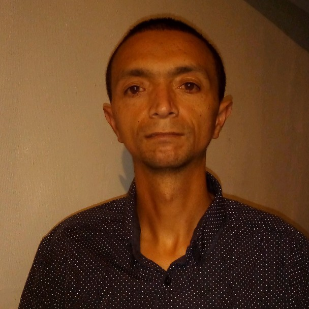

About Me
I am born and raised in South Africa , devoted my whole life to Christ and His teachings and also served as a branch secretary and Elders Quorum Secretary.I am a certified Analytical laboratory Technician, who wants to obtain a degree in programming.I have three lovely children, two daughters and a son. My wife always by my side and more then just my life partner,whom I am fully devoted with. I love spending time on pc`s if it`s upgrading them or fixing them and one of my best hobbies is online Gaming.I also love playing piano and that is the reason why I am pursuing a career in coding and programming. I have been very sick and was admitted to hospital as a baby every year, but through the grace and power of the Melchezideck priesthood and the faith of my parents I was healed and today I have that same priesthood Power.God blessed me to baptise my wife, son and daughters and blessed them as babies. I testify that nothing is more powerfull than a priesthood blessing through the power of the Holy Ghost except God and Jesus Christ.